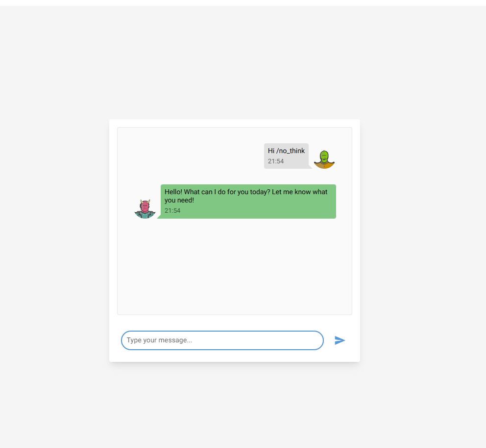

Generative AI Project Template

Template for a new AI Cloud project.
Click on Use this template to start your own project!

This project is a generative ai template. It contains the following features: LLMs, information extraction, chat, rag & evaluation. It uses LLMs(local or cloud), NiceGUI (frontend) & FastAPI (backend) & Promptfoo as an evaluation and redteam framework for your AI system.
| Test LLM |
|---|
|  |
Engineering tools:
- [x] Use UV to manage packages in a workspace (
frontendandbackend). - [x] pre-commit hooks: use
ruffto ensure the code quality &detect-secretsto scan the secrets in the code. - [x] Logging using loguru (with colors)
- [x] Pytest for unit tests
- [x] Dockerized project (Dockerfile & docker-compose).
- [x] NiceGUI (frontend) & FastAPI (backend)
- [x] Make commands to handle everything for you: install, run, test
AI tools:
- [x] LLM running locally with Ollama or in the cloud with any LLM provider (LiteLLM)
- [x] Information extraction and Question answering from documents
- [x] Chat to test the AI system
- [x] Efficient async code using asyncio.
- [x] AI Evaluation framework: using Promptfoo, Ragas & more...
CI/CD & Maintenance tools:
- [x] CI/CD pipelines:
.github/workflowsfor GitHub (Testing the AI system, local models with Ollama and the dockerized app) - [x] Local CI/CD pipelines: GitHub Actions using
github act - [x] GitHub Actions for deploying to GitHub Pages with mkdocs gh-deploy
- [x] Dependabot
.github/dependabot.ymlfor automatic dependency and security updates
Documentation tools:
- [x] Wiki creation and setup of documentation website using Mkdocs
- [x] GitHub Pages deployment using mkdocs gh-deploy plugin
Upcoming features: - [ ] add RAG again - [ ] optimize caching in CI/CD - [ ][Pull requests templates](https://docs.github.com/en/communities/using-templates-to-encourage-useful-issues-and-pull-requests/creating-a-pull-request-template-for-your-repository) - [ ] Additional MLOps templates: https://github.com/fmind/mlops-python-package - [ ] Add MLFlow - [ ] add Langfuse
1. Getting started
This project is a monorepo containing two main packages:
frontend: A NiceGUI application.backend: A FastAPI application that serves the AI models and business logic.
The project uses uv as a package manager and is configured as a workspace, so dependencies for both packages can be installed with a single command.
The following files are used in the contribution pipeline:
.env.example: example of the .env file..env: contains the environment variables used by the app.Makefile: contains the commands to run the app locally.Dockerfile: the dockerfile used to build the project inside a container. It uses the Makefile commands to run the app..pre-commit-config.yaml: pre-commit hooks configuration filepyproject.toml: The rootpyproject.tomldefines theuvworkspace and shared development dependencies.frontend/pyproject.toml: Dependencies for the frontend application.backend/pyproject.toml: Dependencies for the backend application, including optional dependencies forcpuandcuda..github/workflows/**.yml: GitHub actions configuration files..gitlab-ci.yml: Gitlab CI configuration files..gitignore: contains the files to ignore in the project.
Tree:
.
├── .env.example # example of the .env file
├── .env # contains the environment variables
├── Dockerfile # the dockerfile used to build the project inside a container. It uses the Makefile commands to run the app.
├── docker-compose.yml # docker-compose configuration file (used to run the frontend and backend in docker)
├── Makefile # contains the commands to run the app (like running the frontend, tests, installing packages, docker...)
├── assets
├── pyproject.toml # uv, dependencies, pytest, ruff & other configurations for the package
├── uv.lock # uv lock file
├── .pre-commit-config.yaml # pre-commit hooks configuration file
├── .gitignore # contains the files to ignore in the project
├── .github
│ ├── dependabot.yml # dependabot configuration file
│ └── workflows # GitHub actions configuration files
│ └── test-deploy.yaml
├── mkdocs.yml # mkdocs configuration file
├── uv.lock
├── frontend
│ ├── pyproject.toml # Frontend dependencies
│ └── src/
├── backend
│ ├── pyproject.toml # Backend dependencies (including cpu/cuda extras)
│ └── src/
├── .pre-commit-config.yaml
├── .gitignore
├── .github/
├── scripts
│ └── gen_doc_stubs.py # mkdocs : generate documentation stubs
├── CODE_OF_CONDUCT.md
├── CONTRIBUTING.md
├── README.md
├── LICENSE
└── tests/
1.1. Local Prerequisites
- Ubuntu 22.04 or MacOS
- git clone the repository
- UV & Python 3.12 (will be installed by the Makefile)
- Create a
.envfile (take a look at the.env.examplefile)
1.2 ⚙️ Steps for Installation
This project uses a Makefile to simplify the installation and execution process.
Local Installation
-
For CPU-based environment (or MacOS) To install all dependencies for both
frontendandbackendfor a CPU environment, run:bash make install-dev -
For NVIDIA GPU (CUDA) environment If you have an NVIDIA GPU and want to use CUDA for acceleration, run:
bash make install-dev-cudaThis will install the CUDA-enabled version of PyTorch.
Using Docker
The project can be fully containerized using Docker. This is the recommended way to run the application as it handles all services and networks.
- The docker-compose.yml and docker-compose-cuda.yml files define the services.
- To build the main docker image:
bash
make docker-build
- To run the entire application stack (frontend, backend, database, Ollama) using Docker Compose:
bash
make run-app
Running the Application
Once installed (either locally or via Docker), you can run the services.
-
Run Everything: The
make run-appcommand is the easiest way to start all services, including the frontend, backend, database, and Ollama. -
Run Services Individually:
- Run Frontend:
make run-frontend - Run Backend:
make run-backend
You can then access: - Frontend (NiceGUI): http://localhost:8080 (or the configured port) - Backend (FastAPI): http://localhost:8000 (or the configured port). Docs http://localhost:8000/docs
Using Local vs. Cloud LLMs
- Local model (Ollama):
- Ensure Ollama is running (
make run-ollamacan help). - Set your
.envfile to point to the local Ollama endpoint. - Download a model:
make download-ollama-model - Test the connection:
make test-ollama
- Ensure Ollama is running (
- Cloud model (OpenAI, Anthropic, etc.):
- Update your
.envfile with the correct API keys and model names, following the LiteLLM naming convention. - Test the connection:
make test-inference-llm
- Update your
1.3 ⚙️ Steps for Installation (Contributors and maintainers)
Check the CONTRIBUTING.md file for more information.
2. Contributing
Check the CONTRIBUTING.md file for more information.